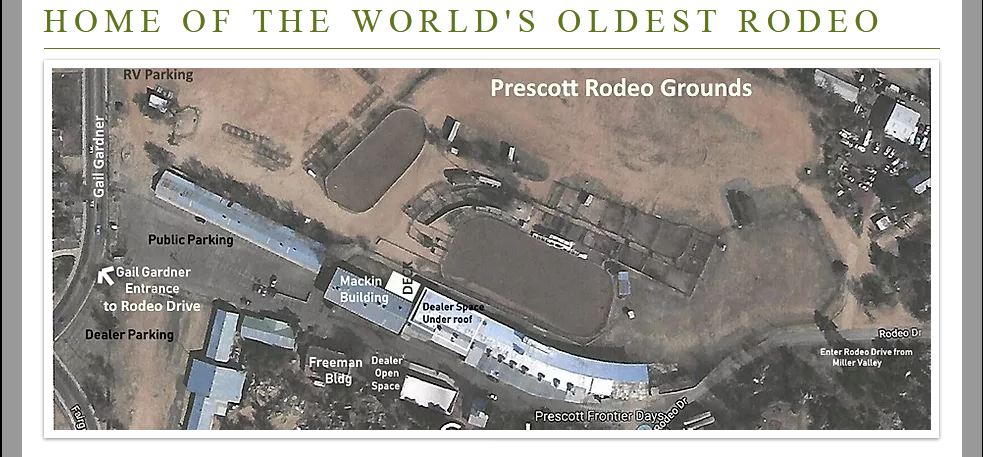
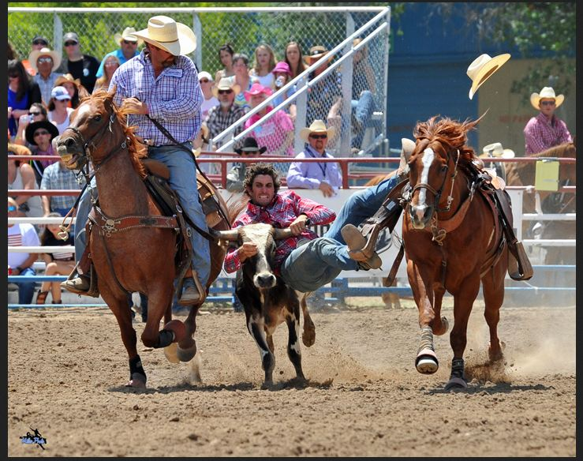

The 134rd annual World’s Oldest Rodeo® is back on action! The World’s Oldest Rodeo 2021 will be held on Monday, June 28 – Sunday, July 4 in Rodeo Dr, Prescott, AZ. Where the “Best of the Best” rodeo contestant and fans from around the World will join together to witness champions competing for the top prize!

The World’s Oldest Rodeo will bring together world-top contestant, both human and animal, with eight pro rodeo performances taking place inside the Prescott Rodeo Grounds. Each World’s Oldest Rodeo performance includes Bareback Riding, Steer Wrestling, Team Roping, Saddle Bronc, Tie-Down Roping, Barrel Racing, and Bull Riding events.
| Venue | Rodeo Dr, Prescott, AZ |
| Starting Date | Monday, June 28, 2020 |
| End Date | Sunday, July 4, 2020 |
| Sanctioned | PRCA |
| Broadcast | The Cowboy Channel, CowboyChannelPlus |
| Live stream | Watch here |
A week long festival of rodeo and the rebellious freedom of the western lifestyle that lives strong in Prescott Rodeo Grounds. The Prescott Frontier Days in Prescott, Arizona, is renowned as the World’s Oldest Rodeo, held annually over Fourth of July weekend. And despite many rodeos being canceled this summer, Prescott Frontier Days Rodeo is a go. The event will allow both locals and tourists to experience the rodeo and the World best athletes it draws. But the celebration don’t stop with the performances, there is a nightly cabarets & performances, a tradeshow, kids zone and more!
When is the World’s Oldest Rodeo?
Since 1888, this traditional event has occurred annually over the 4th of July weekend with eight breath-taking performances. Better still it’s opens to fans, but it may look a little different this year than in years past. The 134rd annual event will take place Monday, June 28 through Sunday, July 4.
Where is the World’s Oldest Rodeo 2021 held?
Prescott Frontier Days®, Inc. presents the 134rd annual World’s Oldest Rodeo® at the Prescott Rodeo Grounds Since 1888. Prescott Frontier Days Rodeo is one of the largest annual rodeo events in AZ, make sure to get out to the rodeo early to watch Prescott Frontier Days Rodeo events.

Where is the Prescott Rodeo Grounds?
Rodeo Dr, Prescott, AZ
Getting to the Prescott Rodeo Grounds is easy. the City of Prescott owned rodeo grounds are managed by Prescott Frontier Days® , Inc. This organization annually sponsors the World’s Oldest Rodeo®, Prescott Frontier Days®, Inc., the Rodeo Parade, Rodeo Dances, and the Trail Ride. It’s located in 840 Rodeo Dr, Prescott, AZ 86305.
World’s Oldest Rodeo 2020 – SCHEDULE
Gates open two hours prior to each performance and we encourage our guests to come early, shop, eat and enjoy!
Performance #1 – Monday, June 28, 2021 – 7:30 PM
Performance #2 – Tuesday, June 29, 2021 – 7:30 PM
Performance #3 – Wednesday, June 30, 2021 – 7:30 PM
Performance #4 – Thursday, July 1, 2021 – 7:30 PM
Performance #5 – Friday, July 2, 2021 – 7:30 PM
Performance #6 – Saturday, July 3, 2021 – 1:30 PM
Performance #7 – Saturday, July 3, 2021 – 7:30 PM
Performance #8 – Sunday, July 4, 2021 – 1:30 PM

World’s Oldest Rodeo 2021 Events
The World’s Oldest Rodeo is sanctioned by the PRCA. Performances include both judged and timed events. Cowboys and cowgirls compete against one another for the highest score or the shortest time. Top athletes walk away with cash prizes and commemorative belt buckles. Each of the eight Pro Rodeo performances includes:
- Bareback riding
- Saddle bronc riding
- Bull riding
- Steer wrestling
- Tie-down roping
- Team roping
- Barrel racing
World’s Oldest Rodeo Dance schedule
Rodeo Dance: July 1, 2, and 3, 2021
Time: 8:00 PM to 1:00 AM
Location: Depot Marketplace, BMO Harris Bank parking lot
Band: Lonesome Valley
Prescott Frontier Days® Inc. Rodeo Parade
2021 Parade Theme: History Lives Here
Downtown Prescott – Courthouse Plaza
July 3, 2021 – 9 AM
Happy Hearts Rodeo for Exceptional Children
Date: June 28, 2021
Location: Prescott Rodeo Grounds
This special event began back in the early 1980s when the wife of a PRCA cowboy came up with the idea to offer exceptional children a first-hand experience at rodeo. In partnership with the PRCA, the idea became a reality and Prescott Frontier Days®, Inc. has been honored to be involved every year. All rodeo events are modified and take place on the ground so each contestant can participate. All participants are treated to a cowboy dinner and the kickoff-rodeo performance. – In partnership with the PRCA and Horses With Heart: VISIT WEBSITE
Arts and Crafts Show
Date: July 3-5, 2021
Time: 9 am – 5 pm
Location: Downtown Prescott – Courthouse Plaza
Cowboy Church
Date: July 4th, 2021
Time: 9:00 AM
Location: Prescott Rodeo Grounds
What TV Channel will the World’s Oldest Rodeo be on?
The entirety of the Prescott Frontier Days Rodeo 2021 main performances will air live on the The Cowboy Channel from Monday, June 28 – Sunday, July 4 beginning at 2:00 PM. Because this is an exclusive deal between the network and the PRCA, the World’s Oldest Rodeo will not be shown on any other TV network during the 8-day period. We have rounded up everything you need to know about how to watch Prescott Frontier Days Rodeo 2020 live stream on TV and online.
| World’s Oldest Rodeo | June 28 | 10:30 p.m. ET | TCC/TCC+ |
| World’s Oldest Rodeo | June 29 | 10:30 p.m. ET | TCC/TCC+ |
| World’s Oldest Rodeo | June 30 | 10:30 p.m. ET | TCC/TCC+ |
| World’s Oldest Rodeo | July 1 | 10:30 p.m. ET | TCC/TCC+ |
| World’s Oldest Rodeo | July 2 | 10:30 p.m. ET | TCC/TCC+ |
| World’s Oldest Rodeo | July 3 | 4:30 p.m. ET | TCC/TCC+ |
| World’s Oldest Rodeo | July 3 | 10:30 p.m. ET | TCC/TCC+ |
| World’s Oldest Rodeo | July 4 | 4:30 p.m. ET | TCC/TCC+ |
How to watch World’s Oldest Rodeo 2021 live streaming
Cowboy Lifestyle Network is proud to share with you the latest and greatest in rodeo news and events, up next is the highly-anticipated Prescott Frontier Days Rodeo! Get ready for World’s Oldest Rodeo, “A Western Tradition since 1977!” While this rodeo will not be open to the public, the Rodeo will be televised live on the Cowboy Channel, Dish Network-232, Direct TV-603, Cox-260. Available on the following devices and platforms: CBS All-access, ProRodeoTV, iOS, Apple TV, Android, Chromecast, Kindle Fire, Fire TV, Fire TV Stick, Xbox, Windows 8, and Roku. You must receive TV video service from At&T, U-Verse, Charter, Optimum, Bright House, Comcast, Cox, Dish, Timer Warner Cable, Verizon, Midcontinent, or DirectTV.
Ways to stream World’s Oldest Rodeo online
The World’s Oldest Rodeo will be available on the following devices and platforms: The Cowboy Channel, Dish Network, Direct TV, and devices includes iOS, Apple TV, Android, Chromecast, Kindle Fire, Fire TV, Fire TV Stick, Xbox, Windows 8, and Roku. You must receive TV video service from At&T, U-Verse, Charter, Optimum, Bright House, Comcast, Cox, Dish, Timer Warner Cable, Verizon, Midcontinent, or DirectTV. The following are some platforms where these strategies could be useful:
The Cowboy channel
Beginning December 27, 2017, The Cowboy Channel, the first 24-hour television network totally dedicated to western sports and the western lifestyle, will be available on DIRECTV channel 603. In addition, The Cowboy Channel can also be streamed via Sling TV’s Heartland Extra package.
The Cowboy Channel:
- AT&T (Channel 566)
- Charter Spectrum
- Comcast
- Suddenlink
- Sling TV’s Heartland Package
- Verizon FiOS TV
- The Cowboy Channel Plus App
To find out if RFD-TV and THE COWBOY CHANNEL are available in your area, please click here and enter your zip code also choose your Pay TV provider.
Dish Network
Dish Welcome Pack (Approximately $19.99/month). This is the most basic TV pack Dish offers. The monthly fee you see is an everyday rate, so there’s no need to worry about future price hikes, as is common with DirecTV or Xfinity. As for channel variety, the Dish Welcome Pack provides 40+ channels. If you are a subscriber of Dish Network, just tune into The Cowboy Channel – 232 (HD).
DirecTV Now
Now that AT&T TV Now is the name for DirecTV Now, you are free to be confused. SeniorDiscounts Members receive up to 55% off DIRECTV Programming packages as well as other specials and offers like discounts on the NFL package. Allows for the viewing of over 65 live channels at $40/month. In order to take advantage of the free possibilities, one would have to sign up and receive the free 7-day trial. If timed properly, one could watch the Prescott Frontier Days Rodeo 2020 live action during the free trial period and cancel free of charge prior to the trial’s expiration. Just tune into The Cowboy Channel – 603 (HD).
Cox
Cox offers a senior citizen discount of 30 percent off basic cable services. Customers who are 60 or older and earn less than $24,000 can apply at their local Council on Aging. The Cowboy Channel is now distributed by all major MSOs including DISH channel 232, AT&T U-Verse channel 566, Suddenlink channel 365, Verizon FIOS channel 246, Charter Spectrum, Cox, Comcast, Mediacom, and many other rural cable systems. Just tune into The Cowboy Channel – 260 (HD).
RFD-TV Now
RFD-TV Now delivers both real-time LIVE programming as well as an expansive on-demand library with access to more than 90 shows such as Hee Haw, Opry Encore, The Best of the Marty Stuart Show, Ag PHD, and FarmHer, as well as daily broadcasts of Market Day Report and Rural Evening News.
On June 28, 2021, Prescott Frontier Days begin along with the annual Prescott Rodeo 2021. This year marks 134 for the PRCA event, which is billed as the “World’s Oldest Rodeo”. Tens of thousands come from the state, across the country and around the world to attend the festivities and experience the heart-stopping thrills of the eight Pro Rodeo performances. And we are beyond blessed that the PFR Committee has decided to move forward with this year’s event despite everything going on.
Finally
With the COVID-19 pandemic still being a concern in the state of Arizona, rodeo general manager J.C. Trujillo has agreed to limit the number of tickets sold. The rodeo is limiting the seating capacity to 25 percent.
The grandstand will be divided into reserved sections to separate spectators and social distancing guidelines will be followed.
If you aren’t able to get tickets for the performances of your preference due to the new limitations, don’t fret — you may still be able to watch the rodeo action. Stay tuned for more news about the 2020 Prescott Frontier Days to come!
Learn more about this year’s event here.
To buy tickets, visit official World’s Oldest Rodeo website here.
It’s going to be different, but we are ready to make the best of it and enjoy the action from the comfort of our home on the Cowboy Channel and you can do the same to support the sport we love!For more info stay tune portal-alpha.financial-ombudsman.org.uk.